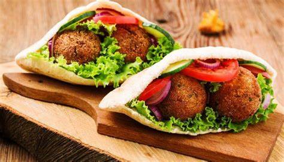

My favriut food to eat in Egypt
koshari:
In the Egyptian Books of Genesis,[4] the Ancient Egyptian term "Koshir" meant "Food of the rites of the Gods",[4] the Koshir was a breakfast dish that consisted of lentils, wheat, chickpeas, garlic and onions cooked together in clay pots.[4] It has been claimed that the original account of the book goes back to Manetho. However in the collected works of Manetho, no mention of Koshir could be found.[5] The word is not related to the Jewish dietary laws known as Kosher [citation needed]. A priest from Heliopolis described it as a food to eat after fasting on the 11th day of Pachons, a month in the ancient Egyptian calendar. Koshary is known as "The food of the Poor" it consists of fried onions, lentils, rice, macaroni and a red sauce and its considered the best egyption food.
Ta3mya:
The original version of falafels, taameya is an Egyptian variety of the Middle Eastern fritter that calls for fava beans instead of chickpeas. While the exact origin of falafel is debatable, most scholars and food historians agree that taameya has roots in the Egyptian cuisine. The fava bean mixture is typically flavored with leeks, onions, fresh coriander, parsley, , and the fritters are coated with sesame seeds before frying. Taameya are known for having a lighter, fluffier, and moister texture than other falafel varieties thanks to the use of fava beans. Although they are eaten year-round and are a common street food fare in Egypt, taameya fritters are especially popular during Ramadan. They’re commonly stuffed in warm pita bread sandwiches and paired with accompaniments such as fresh or pickled vegetables